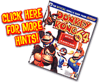
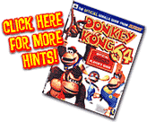

| First, open the Main Areas | |
| Win the Rareware Coin from Cranky | |
| Light the Lighthouse | |
| Be a hero and free the Seal | |
| Race the Seal | |
| Explore the Sunken Ship | |
| Find and return Snide's Blueprint |
|
|
|||||||||||||||
 |
Those Golden Bananas may not taste as good, but they sure are valuable! You can help DK get a bunch of them on the Gloomy Galleon if you follow these directions:
|
||||||||||||||